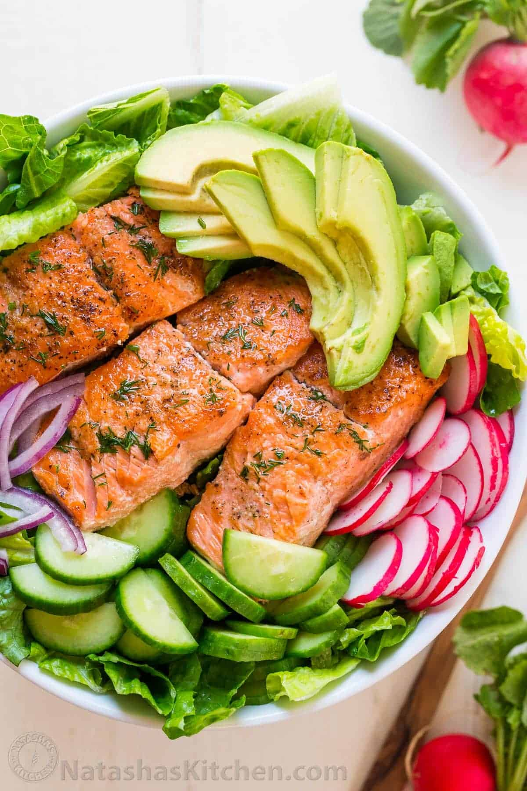

Avocado Salmon Salad

This avocado salmon salad is a keeper! It is loaded with all of the best ingredients; crunchy cucumber, crisp
lettuce and juicy pan seared salmon. The fresh lemon dill dressing is so easy and gives this salad amazing flavor.
Ingredients
Ingredients for Salmon Salad:
- 1 lb salmon filets (boneless, skinless, cut into 4 fillets)
- 1 tsp garlic salt
- 1/8 tsp freshly ground black pepper
- 1/2 Tbsp olive oil to sauté
Ingredients for Lemon Dill Dressing:
- 3 Tbsp lemon juice, from 2 medium lemons
- 3 Tbsp extra virgin olive oil
- 1 tsp sea salt
- 1/8 tsp black pepper
- 2 Tbsp dill, freshly chopped
Ingredients for Avocado Salmon Salad:
- 1 romaine lettuce , (1 medium head or 6 cups chopped)
- 1/2 English cucumber, sliced
- 6 radishes, thinly sliced
- 1/2 small red onion, (1/2 cup) thinly sliced
- 2 avocados, pitted, peeled and sliced
Instructions
-
In a small bowl, whisk together dressing ingredients: 3 Tbsp lemon juice, 2 Tbsp dill, 1 tsp sea salt and 1/8 tsp
black pepper. Stir together and set aside.
-
Season both sides of salmon filets with 1 tsp garlic salt and 1/8 tsp pepper, or season to taste.
-
Heat 1/2 Tbsp oil in a large nonstick pan over medium heat. Once oil is hot, add salmon and cook 3-4 minutes per
side or until golden and cooked through (cook time can vary depending on thickness of salmon filet). Remove salmon
to a plate and spoon 1 teaspoon of the dressing over each filet. Set aside to cool to room temperature.
-
Arrange salad ingredients in the salad bowl: 6 cups romaine lettuce, sliced english cucumber, sliced radishes, 1/2
cup thinly sliced red onion, and sliced avocados. Drizzle with remaining lemon dressing and toss to combine.
Divide between 4 plates and top each plate with a salmon filet.